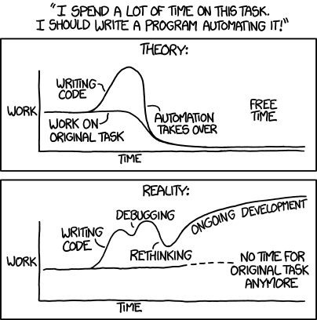

README, INSTALLING, CHANGES, COPYING, AUTHORS
The comic refers to the phenomenon in which computer programmers attempt to create programs to automate menial but frequent tasks, to save time and effort. These attempts often end up taking much more time than the menial tasks would have taken. The first graph reflects the assumed ideal that leads programmers into such an attempt: writing the program will take more effort initially, but once the program is complete, it will take over the routine tasks, leaving the programmer free to do something else.
 https://xkcd.com/1319/However, writing a program often turns out to be not that simple: programs can have defects, and certain functionalities can be hard to implement. Because of this, programmers usually spend more time than projected to finish a program. As time goes on, the desire to see it finished can consume the programmer's effort and attention, with the menial tasks left undone.
So this simple script is more than 700 lines of bash code. The number of bugs is still unknown.
Copyright © 2020 www.utappia.org